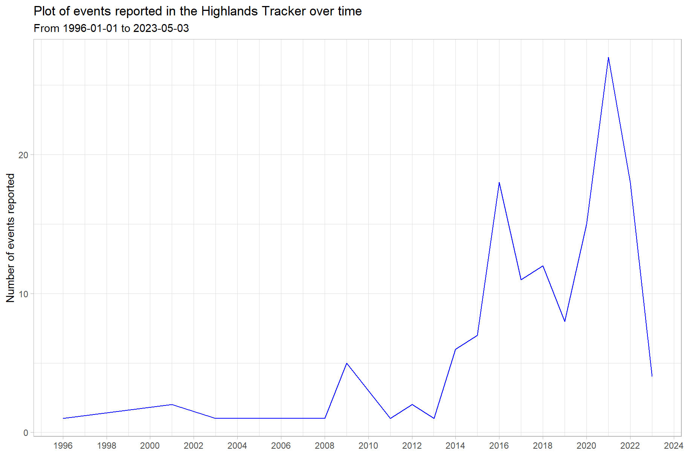
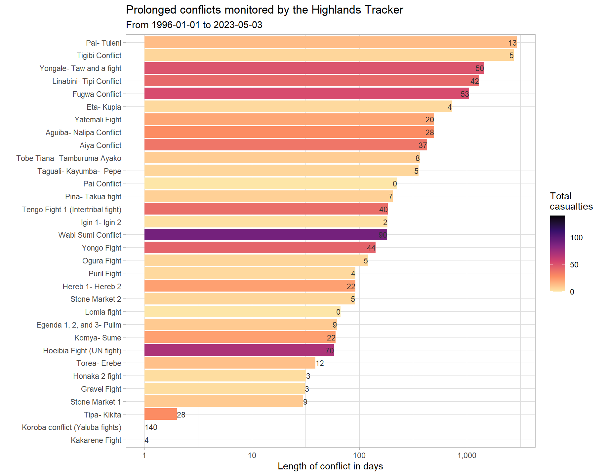
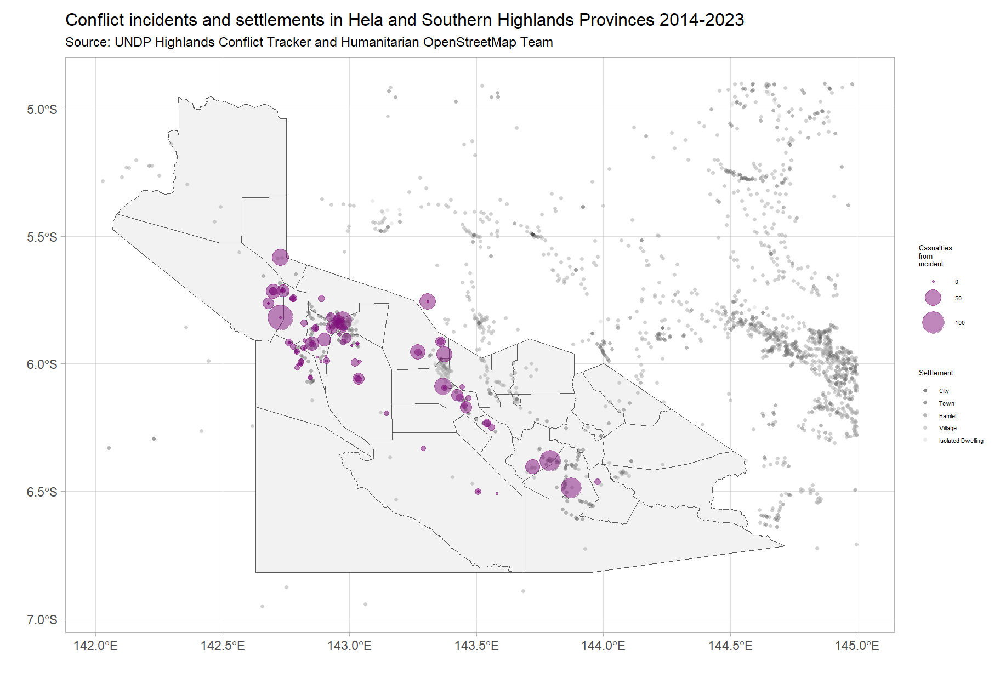
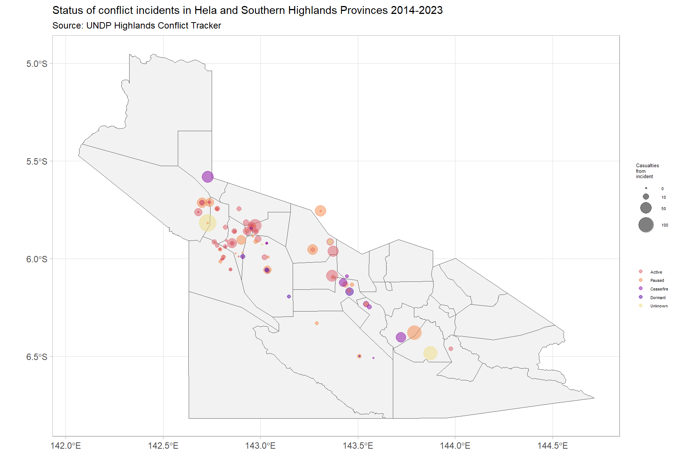
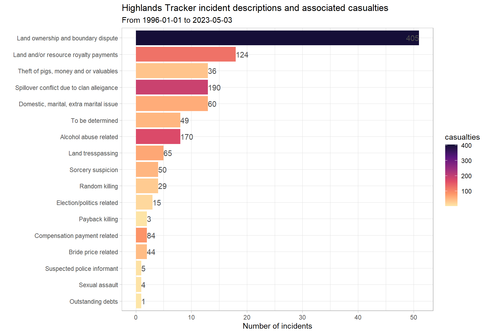
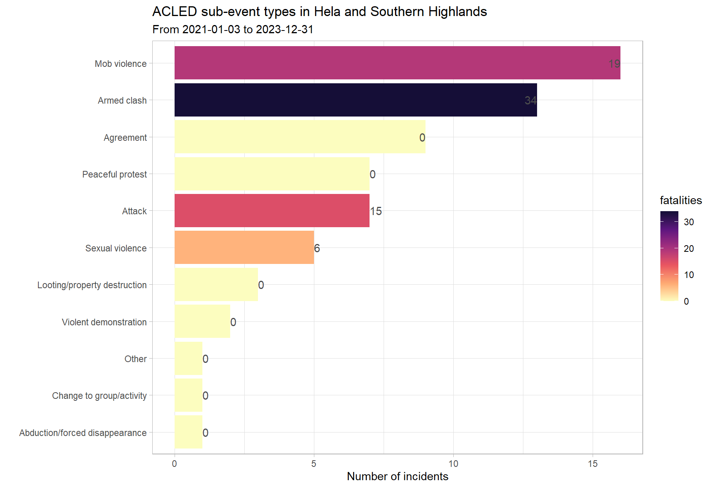
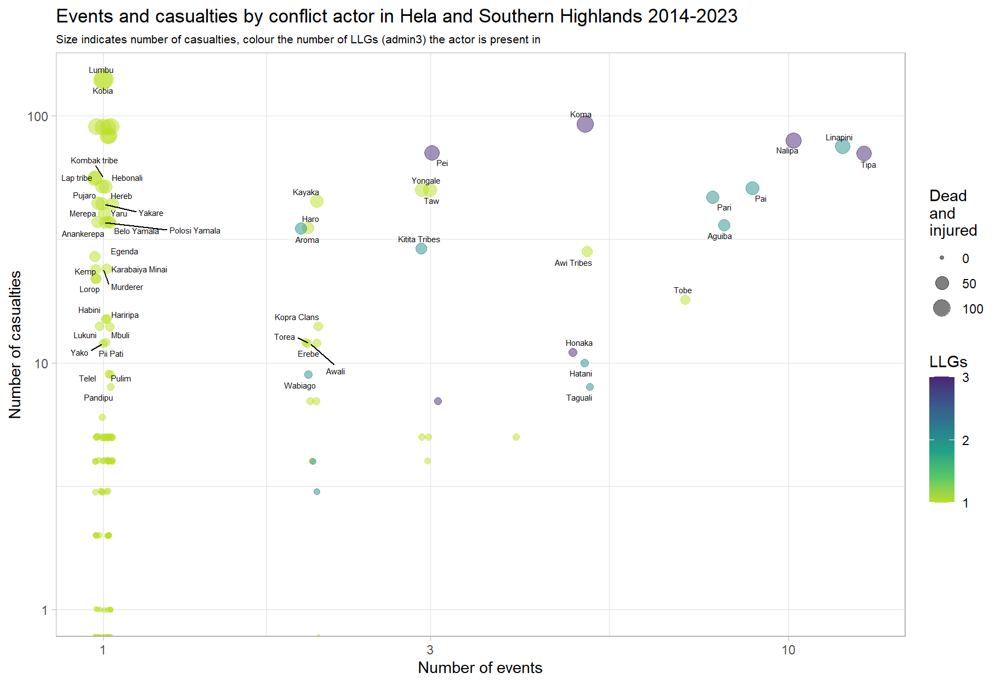
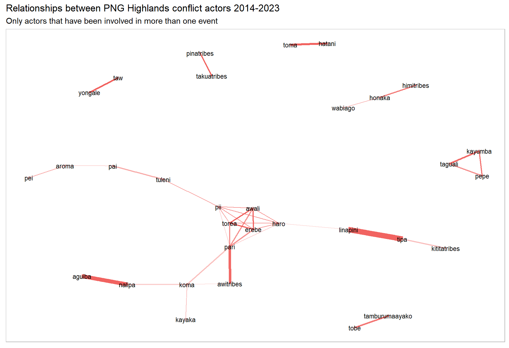
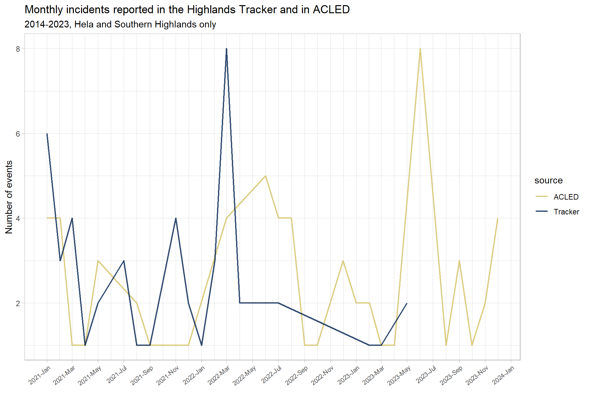
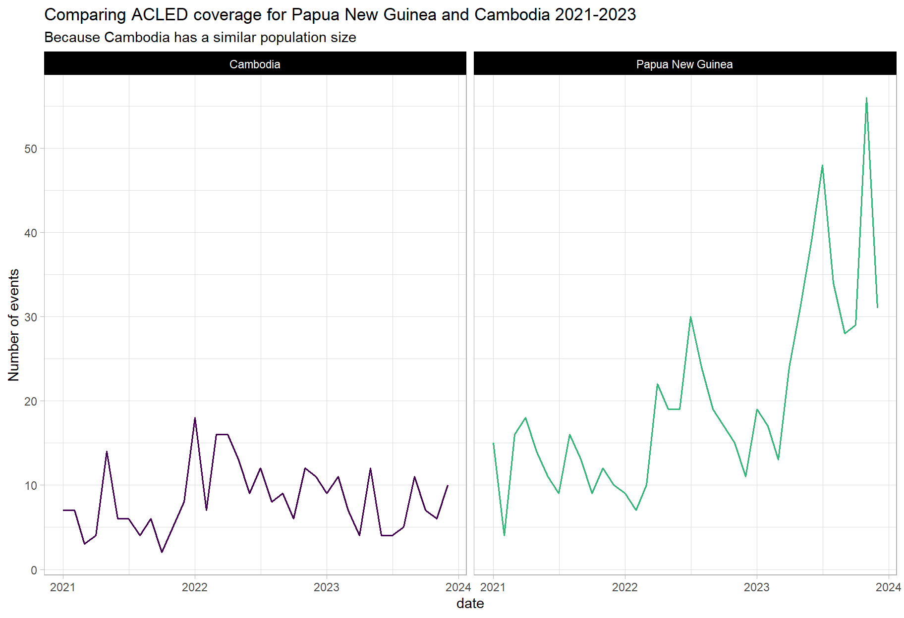

Exploratory data analysis of Highlands Conflict Tracker
1. Inspecting the dataset
The Papua New Guinea Highlands Conflict Tracker is a dataset of conflict incidents collected in Hela and Southern Highlands Provinces. The partner engaged in data collection was ICRC, but data collection has since stopped.
Though the catchment area is limited to Hela and Southern Highlands Provinces, the amount of data is unprecedented for Papua New Guinea, covering a total of 27 years.
The dataset consists of 149 observations – each a conflict incident. Observations began in 1996-01-01 and lasted until 2023-05-03. Reporting began to increase in volume in 2013:
It is unclear if this increase in event reporting had to do with increased violence and criminality or additional resources being afforded to the partner conducting the reporting. Interestingly, the most recent spike in violence came prior to the 2022 elections. Unfortunately, there are not many points of comparison:
UCDP data is nationwide and goes back to 1989, but it records very few incidents, and is mainly concerned with actors trying to change the government or challenge state actors. ACLED only started data collection in 2021.
The dataset categorises incidents by their description, people and groups involved and by conflict. The tracker dataset has collected data on 109 conflicts, of which 32 were formed of multiple incidents over multiple days. These are plotted below by their duration.

2. Mapping the data

As the next part of our inspection of the dataset, we can see that the tracker’s coverage of Hela and Southern Highlands is fairly good, with the omission of the area starting at 143.5 -6 and ending at 144.5 -6. The distribution is also commonsensical, with many conflicts arising around populated areas. There seems to be one large cluster around Koroba and Tari Poi.
Here is another map of the data, this time focusing on conflict status, as in the dashboard:

The vast majority of the monitored conflicts that are active are in Koroba and Tari Poi, but Komo Magarima has accumulated the highest number of conflict casualties (dead and injured) in the past 10 years.
| province | district | Active | Ceasefire | Dormant | Paused | Unknown | Total |
|---|---|---|---|---|---|---|---|
| Hela Province | Komo Magarima District | 188 | 1 | 52 | 128 | 5 | 374 |
| Hela Province | Koroba Kopiago District | 44 | 94 | 5 | 68 | 140 | 351 |
| Hela Province | Tari Pori District | 237 | 0 | 26 | 43 | 0 | 306 |
| Southern Highlands Province | Kagua Erave District | 4 | 37 | 0 | 90 | 83 | 214 |
| Southern Highlands Province | Nipa Kutubu District | 4 | 38 | 22 | 25 | 0 | 89 |
| Total | - | 477 | 170 | 105 | 354 | 228 | 1334 |
3. Categorising the data
From the chart on conflict durations in section 1, the duration does not seem to be a predictor of conflict casualties. Instead, incident descriptions seems to be more useful.
73% of casualties (dead and injured) stem from the first 5 incident descriptions, with land-related incidents forming almost half (45%) of all casualties.
Conflict around land is deeply connected to a number of social and economic issues, including resource allocation, mobility and connectivity as well as with social and group identities. Mitigating conflicts arising from territorial disputes is a core duty of government, not the UN. It might be more programmatically sound to support national land reform or improve surveying, development of cadastral maps and their enforcement.

The categorisation above, by incident description, includes several categories not normally tracked in conflict-related research. These include issues related to domestic abuse, alcohol abuse and theft.
The line between criminality and conflict is not always very clear, especially when there are organised crime elements. Therefore, it is important for the PNG Country Office to determine if the various tribal and communal militias in PNG constitute a similar threat that gangs and cartels do in, say, Ecuador’s descent into gang violence.
Though these incident description categories do very well in providing us context to the violence, as well as insight into many triggers, these descriptions unfortunately do not describe the type of violence, making it hard to understand if there have been an escalation in tensions. For an example, let us review ACLED’s sub-event types:

Though ACLED does not present triggers and underlying factors to the conflict, like the tracker does, the type of violence is always clear. It would be fruitful to go back and classify incidents according to ACLED’s terminology; this is quite an interesting avenue to explore: would violence from communal militias be considered as mob violence, attacks or armed clashes.
The added value of having event types in the dataset would be easier to monitor the progression of violence, like in this [map of Myanmar], where the point where protests turned to armed clashes is very apparent.
Collecting much more household, clan or tribe level data like in the tracker allows for the identification of persistent flash points and the underlying issues underpinning conflict in the region (such as land disputes), but these types of conflicts and disagreements are much more stable (as root causes are often improbable to address).
4. Conflict actors
4.1 Highlands conflict tracker actors
Below, each conflict actor identified in the Highlands Tracker is plotted, with the number of events each was involved in on the x-axis and the number of casualties (dead and injured) that each actor was involved with on the y-axis.
The size of each point indicates the number of casualties and the colour, the number of LLGs (admin3) each actor was present in, indicating the size and geographic spread of each group.

In the upper right of the plot, we see the more prolific (in violence) communal groups. There is some overlap here with ACLED. The Linapini were also identified as a conflict actor in the ACLED dataset.
On the left-hand side, we see actors which have only one recorded incident, it is not currently understood how isolated these incidents are or if reporting is just incomplete.
Further analysis should include the types of incidents each conflict actor is most likely to engage in and from there, flesh out full profiles for each actor, including “territory”, force strength and key motivators.
4.2 Highlands conflict actor network graph
Below is a network graph of the most-commonly occurring relationships amongst conflict actors.
The strength of the relationship (i.e. how often they are involved in the same incidents) is indicated by transparency of each line and the thickness indicates the number of events where both actors were involved together.
We note several dyads (as they would be termed by the UCDP): the Linapini-Tipa, Aguiba-Nalipa and Hatani-Toma are all (probably) adversarial relationships and rivalries. There is also one larger cluster of tribes. However, due to the sparsity of data, a comparatively small number of events might inflate the importance of some conflicts that may have been one-time events.

There is much rich detail in the incidents reported in the Highlands Conflict Tracker: 168 conflict actors have been recorded between 2014 and 2023.
5. Comparisons to other datasets
Below, we plot the number of incidents reported in the tracker against those reported in ACLED’s dataset. Unfortunately, there are just not enough data points to conduct a meaningful comparison or draw any conclusions about patterns.

Nevertheless, as touched on in the section on categorising the data, there does not seem to be much overlap between the Highland Tracker and ACLED: they both do seem to be focused on slightly different things. The Highlands Tracker has a more household, clan or tribal view of things and contains crimes that would not be recorded by ACLED.
However, the Highlands Tracker is also missing political violence and the movements of state actors (although this absence could also indicate the weakness of the state in Southern Highlands and Hela and its inability to project power over its own territory). To get this added dimension, it should be explored whether the Highlands Tracker should be augmented with ACLED data or with data from UNDSS incident reports.
Relying on ACLED data in the future, to supplement the tracker, is reasonable. We note that their coverage of Papua New Guinea is increasing, making them a useful source of information in the future:

6. Recommendations and next steps
Use the file here; this is a cleaned version of the tracker. A pivoted dataset, similar to the ACLED actors-focused dataset may be found here.
Merge back the full details of each incident back into the dataset so that more analysis may be done.
Reach out to UNDSS and ask for access to all their incident reports.